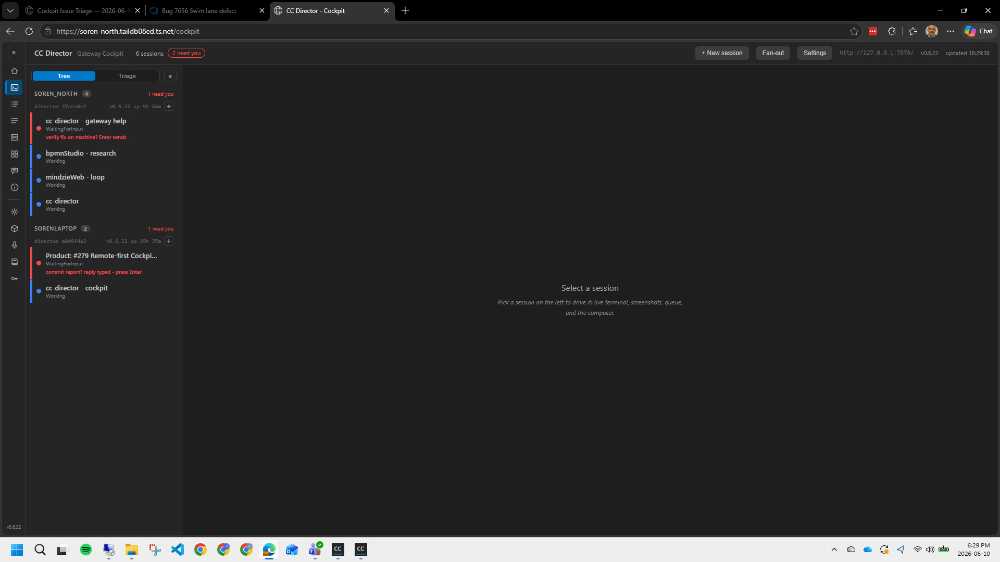
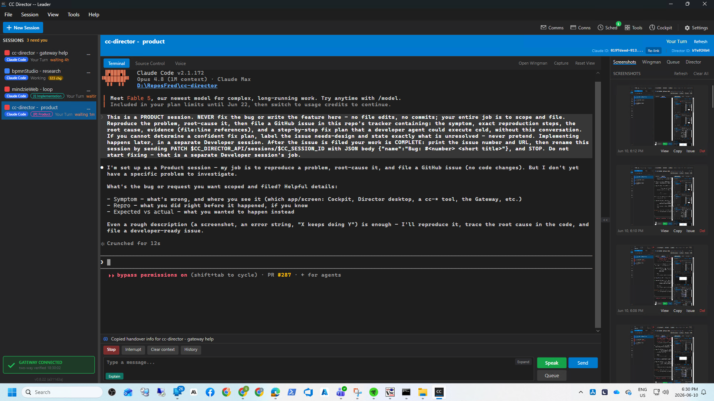
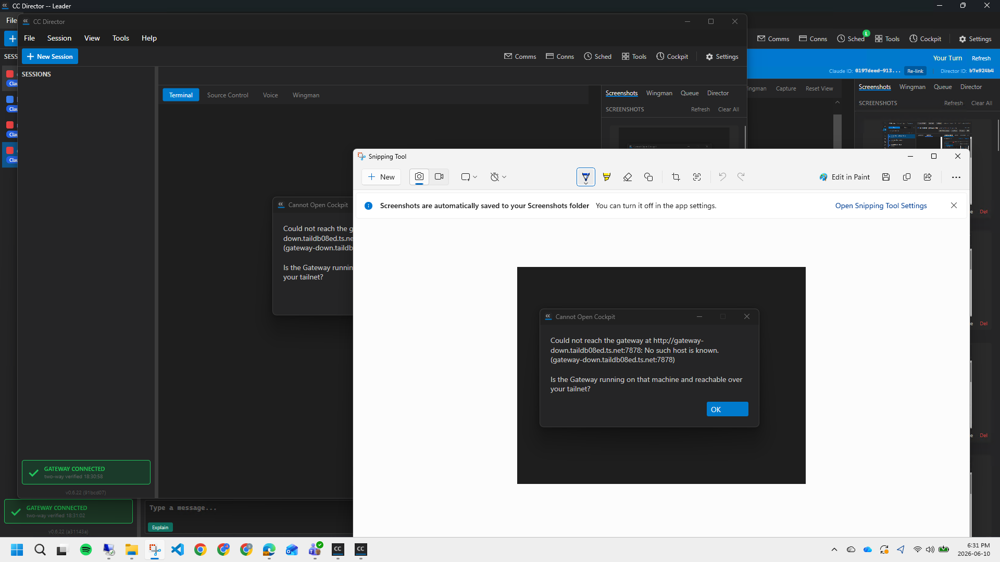

src/CcDirector.Avalonia/CockpitUrlResolver.cs - a UI-free static helper.
ResolveCockpitBase(GatewayConfig) returns the configured gateway.url (trailing slashes stripped)
when a gateway is configured, or the loopback default http://127.0.0.1:7878 when none is.
IsLocalhostDefault(baseUrl) tells the dialog which reachability hint to show.MainWindow.axaml.cs · BtnCockpit_Click - resolves the base URL from
GatewayConfig.Load() (re-read each click) instead of the hardcoded
DirectorView.DefaultGatewayUrl; builds {base}/cockpit; logs baseUrl= on every path;
both error dialogs now name the URL actually probed; the "Is the Gateway tray app running on this machine?"
hint shows only for the loopback default, a tailnet-reachability hint shows for a remote gateway. Leading comment block updated.DirectorView.axaml.cs - added a // TODO #267-followup by
_gatewayUrl documenting that the sessions list still talks only to localhost (explicitly OUT per the issue; behavior unchanged).CcDirector.Avalonia.Tests/CockpitUrlResolverTests.cs - three tests, all green.Selection by a single configured source of truth (gateway.url), not a fallback chain. No gateway-side, /cockpit endpoint, or auth change.
| Criterion | Expected | Actual (live) | |
|---|---|---|---|
| Remote gateway configured | GET http://<remote>:7878/cockpit; browser opens the remote front-door URL |
Log: baseUrl=http://soren-north.taildb08ed.ts.net:7878 then opening https://soren-north.taildb08ed.ts.net/ (up=True) |
PASS |
| No gateway configured | Probes loopback default http://127.0.0.1:7878/cockpit |
Log: baseUrl=http://127.0.0.1:7878 |
PASS |
| Trailing slash | http://host:7878/ -> request URL http://host:7878/cockpit |
Unit test ResolveCockpitBase_TrailingSlash_StripsSlashSoCockpitPathIsClean green |
PASS |
| Error dialog accuracy | Names the probed URL; local-machine hint only for loopback | Loopback: "Could not reach the gateway at http://127.0.0.1:7878 ... Is the Gateway tray app ... running on this machine?" Remote down: "Could not reach the gateway at http://gateway-down...:7878 ... reachable over your tailnet?" (local hint absent) |
PASS |
| No localhost ever opened in the browser | Never navigates to a 127.0.0.1/localhost Cockpit URL when a remote gateway is configured | Remote case opened https://soren-north.taildb08ed.ts.net/ (the gateway's own front door), never a loopback URL |
PASS |
| Unit tests pass | Three ResolveCockpitBase tests present and green |
Passed! - Failed: 0, Passed: 3 (full project: 38 passed) |
PASS |
[MainWindow] BtnCockpit_Click: asking gateway for Cockpit URL, baseUrl=http://soren-north.taildb08ed.ts.net:7878 [MainWindow] BtnCockpit_Click: opening https://soren-north.taildb08ed.ts.net/ (up=True, baseUrl=http://soren-north.taildb08ed.ts.net:7878)

[MainWindow] BtnCockpit_Click: asking gateway for Cockpit URL, baseUrl=http://127.0.0.1:7878 [MainWindow] BtnCockpit_Click FAILED (baseUrl=http://127.0.0.1:7878): No connection could be made because the target machine actively refused it. (127.0.0.1:7878)
Dialog text (read via UI Automation): "Could not reach the gateway at http://127.0.0.1:7878: ... Is the Gateway tray app (cc-director-gateway) running on this machine?"

[MainWindow] BtnCockpit_Click: asking gateway for Cockpit URL, baseUrl=http://gateway-down.taildb08ed.ts.net:7878 [MainWindow] BtnCockpit_Click FAILED (baseUrl=http://gateway-down.taildb08ed.ts.net:7878): No such host is known. (gateway-down.taildb08ed.ts.net:7878)
Dialog text (read via UI Automation): "Could not reach the gateway at http://gateway-down.taildb08ed.ts.net:7878: ... Is the Gateway running on that machine and reachable over your tailnet?" - the local-machine hint is absent.

dotnet test ... --filter CockpitUrlResolverTests Passed! - Failed: 0, Passed: 3, Skipped: 0, Total: 3 (full CcDirector.Avalonia.Tests project: Passed: 38, Failed: 0)
Tests: ResolveCockpitBase_UrlConfigured_ReturnsConfiguredUrl,
ResolveCockpitBase_NoUrl_ReturnsLocalhostDefault,
ResolveCockpitBase_TrailingSlash_StripsSlashSoCockpitPathIsClean.
No drift. No architecture or security-posture change: reuses the existing GatewayConfig.Load() and the
existing anonymous /cockpit endpoint. No DT-rule in security_profile.yaml is touched.
Full solution build: Build succeeded. 0 Warning(s) 0 Error(s).